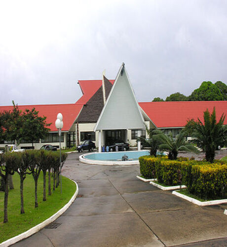

Parliament House, Port Vila Vanuatu
The Parliament of Vanuatu (Bislama: Palamen blong Vanuatu; French: Parlement du Vanuatu) is the unicameral legislative body of the Republic of Vanuatu. It was established by chapter 4 of the 1980 Constitution, upon Vanuatu's independence from France and the United Kingdom.
The functioning of Parliament is derived from the British Westminster system, and includes the principle of parliamentary supremacy, within the limits of the Constitution. The President, as a figurehead, may not veto parliamentary legislation, unless he considers it may be contrary to the Constitution, in which case he may refer it to the Supreme Court, and veto it only if the Supreme Court declares it to be contrary to the Constitution.
Parliament is composed of fifty-two members, directly elected by citizens from multi-member constituencies for a four-year term. Parliament elects the Prime Minister from among its members. Members of Parliament are also, along with the presidents of Regional Councils, members of the Electoral College which elects the President, for a five-year term.The current Speaker of the Parliament is the Hon. Seoule Simeon who has held the position since June 2021.
The Parliament of Vanuatu (Bislama: Palamen blong Vanuatu; French: Parlement du Vanuatu) is the unicameral legislative body of the Republic of Vanuatu. It was established by chapter 4 of the 1980 Constitution, upon Vanuatu's independence from France and the United Kingdom.
The functioning of Parliament is derived from the British Westminster system, and includes the principle of parliamentary supremacy, within the limits of the Constitution. The President, as a figurehead, may not veto parliamentary legislation, unless he considers it may be contrary to the Constitution, in which case he may refer it to the Supreme Court, and veto it only if the Supreme Court declares it to be contrary to the Constitution.
Parliament is composed of fifty-two members, directly elected by citizens from multi-member constituencies for a four-year term. Parliament elects the Prime Minister from among its members. Members of Parliament are also, along with the presidents of Regional Councils, members of the Electoral College which elects the President, for a five-year term.The current Speaker of the Parliament is the Hon. Seoule Simeon who has held the position since June 2021.
Where is Vila?
Vila, also called Port Vila, capital and largest town of the republic of Vanuatu. It is located at southwestern Pacific Ocean on the island of Efate, and is the commercial centre of the island group.
It is volcanic in origin and occupies an area of 353 square miles (915 square km). Its highest peak is Mount Macdonald, which rises to 2,123 feet (647 metres). Efate’s terrain is rugged and covered by tropical rain forest, nurtured by the island’s warm and humid climate. The island is subject to frequent earthquakes, and a series of strong offshore tremors caused widespread damage in 2002.
Although the town is French in appearance, the population is multinational, including ni-Vanuatu, British, French, Chinese, and Vietnamese. It has good harbour, an active commercial port, an international airport, the town has hospitals, hotels, casinos, markets and shopping districts, a sports stadium, a cultural centre, a teacher-training institution, a campus of the University of the South Pacific, and several meat and fish processing plants. The island produces copra, cacao, and kava root; cattle and sheep are raised; and there are growing lumber and tourist industries.
Number of Visit: Page Timestamp: (Days)
Vila, also called Port Vila, capital and largest town of the republic of Vanuatu. It is located at southwestern Pacific Ocean on the island of Efate, and is the commercial centre of the island group.
It is volcanic in origin and occupies an area of 353 square miles (915 square km). Its highest peak is Mount Macdonald, which rises to 2,123 feet (647 metres). Efate’s terrain is rugged and covered by tropical rain forest, nurtured by the island’s warm and humid climate. The island is subject to frequent earthquakes, and a series of strong offshore tremors caused widespread damage in 2002.
Although the town is French in appearance, the population is multinational, including ni-Vanuatu, British, French, Chinese, and Vietnamese. It has good harbour, an active commercial port, an international airport, the town has hospitals, hotels, casinos, markets and shopping districts, a sports stadium, a cultural centre, a teacher-training institution, a campus of the University of the South Pacific, and several meat and fish processing plants. The island produces copra, cacao, and kava root; cattle and sheep are raised; and there are growing lumber and tourist industries.
Number of Visit: Page Timestamp: (Days)